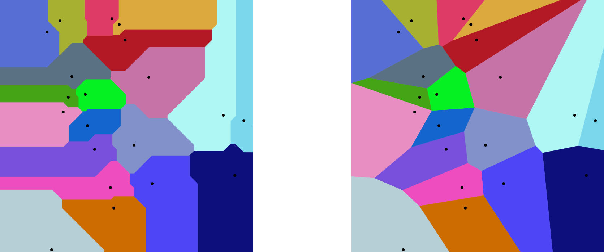
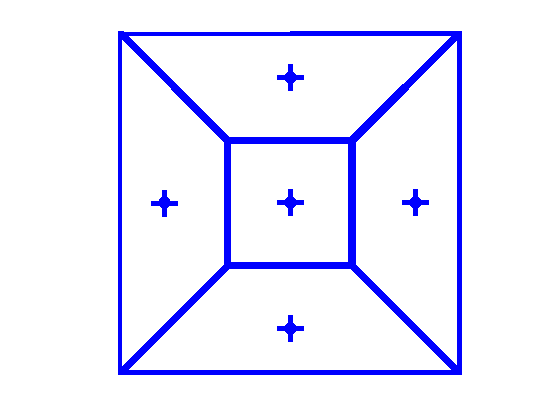

Introduction
In this post we briefly explained Centroidal Voronoi Tessellation (CVT) as a point sampling method and how it rises from the Optimal Transport (OT) theory. Here we will explain the theory behing this method and prove the relation between CVT and OT.
Voronoi cells and Centroidal Voronoi Tessellation
Assume \((X,d)\) is a metric space. Given a set of \(n\) points \(a_1,\dots,a_n \in X\), the Voronoi diagram (Aurenhammer 1991) is formed by \(n\) cells \(V_1,\dots,V_n \subset X\) where \(V_i\) is defined as \[V_i = \{x \in X | d(x, a_j) \ge d(x,a_i) \quad \forall 1 \le j \le n \},\] and \(a_i\) is called the generator of \(V_i\). In addition, for all \(x \in X\), let \(i(x)\) denote the index such that \(x \in V_{i(x)}\). Bellow is an example of Voronoi diagrams formed by 20 points in \([0, 1]^2\) with \(l_2\) (right) and \(l_1\) (left) norm.

For the rest of this post we assume \(X\) is \(\mathbb{R}^2\) or \(\mathbb{R}^3\) and \(d\) is the eclidean distance. For a given probability distribution \(\mathbf{p}\) over \(X\), we say \(a_1,\dots,a_n \in X\) form a Centroidal Voronoi Tessellation if considering the Voronoi cells \(V_1,\dots,V_n\) generated by them, we have \[a_i = \int_{V_i}x\mathbf{p}(x)dx (\forall 1 \le i \le n),\] i.e., \(a_i\) is both the generator and the centroid of \(V_i\). Below an example of such a tessellation over a square with uniform distribution is illustrated.

Semidiscrete Wasserstein distance
Semidescrete Wasserstein distance is a variant of Optimal Transport problem, specifically designed for comparing a discrete and a continuous probability distribution. Assume \((X, d)\) is a metric space, given a set of weighted points \(\mathbf{A} = \{a_1,\dots,a_n\}\) and weights \(w_1 + \dots + w_n = 1\) we define the distribution \(\mathbf{p_A} = \sum_i w_i \delta_{a_i}\), where \(\delta_{a_i}\) is the Dirac delta function located at \(a_i\). Like the previouse section we assume \(\mathbf{p}\) is a given distribution over \(X\). With this setting the non-regularized semidiscrete Wasserstein distance between \(\mathbf{p_A}\) and \(\mathbf{p}\), denoted \(\mathcal{W}(\mathbf{p},\mathbf{p_A})\), is defined as
\[ \mathcal{W}(\mathbf{p},\mathbf{p_A}) = [\min_{P : X \times [n] \rightarrow \mathbb{R}_+} \quad \ \int_{X} \sum_{i=1}^n d(x,a_i)P(x,i)dx]^{1/2} \tag{1}\] \[ \textrm{s.t.} \quad \int_X P(x,i)dx = w_i, \sum_{i=1}^n P(x,i) = \mathbf{p}(x). \] Just like the previouse section we assume \(X = \mathbb{R}^2\) or \(\mathbb{R}^3\) and \(d\) is the equclidean distance for the rest of this post.
The relation of CVT and Semidiscrete Wasserstein distance
Assume we are given \(\mathbf{p}\) and we want to find a weighted point set \(\mathbf{A}\) that minimizes \[\min_{w_i \in \mathbb{R}, \mathbf{A} \subset \mathbb{R}^3} \mathcal{W}(\mathbf{p}, \mathbf{p_A}). \tag{2}\] To solve this optimization problem we will prove the following theorem.
Theorem 1. An optimal solution of Equation 2 is a set of points \(\mathbf{A} = \{a_1,\dots, a_n\}\) that forms a CVT over \(\mathbf{p}\), and \(w_i = \int_{V_i} \mathbf{p}(x)dx\).
We will prove this theorem by splitting it into two lemmas.
Lemma 1. Given a probability distribution \(\mathbf{p}\), a set of points \(\mathbf{A} = \{ a_1,\dots, a_n\} \subset \mathbb{R}^3\) and the Voronoi diagram associated with \(\mathbf{A}\), the weights defined as \(w_i = \int_{V_i} \mathbf{p}(x)dx\) and the transport plan \(P^*\) defined as \(P^*(x,i(x)) = \mathbf{p}(x), P^*(x,j) = 0 \text{ (for any }j\ne i(x)\text{)}\) solve Equation 1 and Equation 2.
Proof. For a fixed set of points we can combine Equation 1 and Equation 2 and write \[\min_{w_i \in \mathbb{R}, \mathbf{A} \subset \mathbb{R}^3} \mathcal{W}(\mathbf{p}, \mathbf{p_A}) = \min_{P : \mathbb{R}^3 \times [n] \rightarrow \mathbb{R}_+,w_i \in \mathbb{R}, \mathbf{A} \subset \mathbb{R}^3} \quad \ \int_{\mathbb{R}^3} \sum_{i=1}^n \lVert x - a_i\rVert^2 P(x,i)dx]^{1/2} \tag{3}\] \[\textrm{s.t.} \quad \int_{\mathbb{R}^3} P(x,i)dx = w_i, \sum_{i=1}^n P(x_0,i) = \mathbf{p}(x_0)\] As \(w_1,\dots,w_n\) only appear in the condition and parameters of the optimization problem Equation 3 we can ignore them and assume \(w_i = \int_{\mathbb{R}^3} P(x,i)dx\) by default. This simplifies the problem to \[\min_{w_i \in \mathbb{R}, \mathbf{A} \subset \mathbb{R}^3} \mathcal{W}(\mathbf{p}, \mathbf{p_A}) = [\min_{P : \mathbb{R}^3 \times [n] \rightarrow \mathbb{R}_+, \mathbf{A} \subset \mathbb{R}^3} \quad \ \int_{\mathbb{R}^3} \sum_i \lVert x - a_i\rVert^2 P(x,i)dx]^{1/2} \tag{4}\] \[\textrm{s.t.} \quad \sum_{i=1}^n P(x_0,i) = \mathbf{p}(x_0)\] \[ \ge [\min_{\mathbf{A} \subset \mathbb{R}^3} \int_{\mathbb{R}^3}\lVert x - a_{i(x)}\rVert^2\mathbf{p}(x)dx]^{1/2}.\] In the last line, we use the fact that \(x\) is in the Voronoi cell of \(a_{i(x)}\), i.e., for all \(i \in [n]\) we have \(\lVert x-a_i\rVert \ge \lVert x - a_{i(x)}\rVert\). Take note that the last line is itself expressing the Optimal Transport problem between \(\mathbf{p}\) and \(\mathbf{p}_\mathbf{A}\) with a specific choice of \(P\) that assigns every point \(x\) to \(i(x)\). Hence in our optimal solution, \(P^*\) assigns all points in \(V_i\) to \(a_i\) for all \(i \in [n]\), i.e., \(P^*(x,i(x)) = \mathbf{p}(x)\) and \(P^*(x,j) = 0\) for any \(j \ne i(x)\).
Lemma 2. Given a region \(V_i\) and a fixed transportation plan \(P\) with the property that \(P(x,i)\) is equal to $ (x)$ for all \(x \in V_i\) and \(0\) otherwise, \(a_i = \int_{V_i}x\mathbf{p}(x)dx / \int_{V_i}\mathbf{p}(x)dx\) solves Equation 2.
Proof. Assume we want to minimize the integral \(\int_{\mathbb{R}^3}\lVert x-a_i\rVert^2P(x,i)dx\) by choosing \(a_i\). First, using the assumption on \(P\) we can simplify it as \[\int_{\mathbb{R}^3}\lVert x-a_i\rVert^2P(x,i)dx = \int_{V_i}\lVert x-a_i \rVert^2\mathbf{p}(x)dx\] \[= \int_{V_i}[\lVert x\rVert^2 + \lVert a_i \rVert^2 - 2\langle a_i, x \rangle]\mathbf{p}(x)dx\] \[= \int_{V_i}\lVert x \rVert^2 \mathbf{p}(x)dx + \lVert a_i\rVert^2\int_{V_i}\mathbf{p}(x)dx\] \[\quad\quad-2 \langle a_i , \int_{V_i} x\mathbf{p}(x)dx\rangle.\] Also, as this integral is invariant to rigid body transformations, we can assume \(\int x\mathbf{p}(x)dx = 0\) (after applying an appropriate translation to \(\mathbf{A}\) and \(\mathbf{p}\)). This assumption yields \[\int_{\mathbb{R}^3}\lVert x-a_i \rVert^2P(x,i)dx =\int_{V_i}\lVert x\rVert^2 \mathbf{p}(x)dx + \lVert a_i \rVert^2\int_{V_i}\mathbf{p}(x)dx.\] The minimum of this equation is \(a_i = 0\), so we conclude that the optimal choice for \(a_i\) is the centroid of \(V_i\). In other words, \(a_i = \int_{V_i}x\mathbf{p}(x)dx / \int_{V_i}\mathbf{p}(x)dx\).